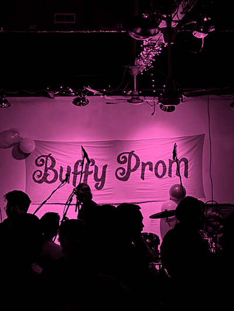

How did the idea of starting Buffy prom come to you?
I was lucky enough when I first started in college to be a part of the punk DIY scene. And on the East Coast and in New York they would regularly do these things called anti-Valentine's Day shows. Usually the money for that would go to local women's shelters or domestic violence organizations, and it would mainly be a way for women and people who don't identify as men to just express themselves and be together rather than being focused on a very male dominated space like DIY punk was then. I'd say now it's not really the case, but back 15 years ago, that definitely was the case.
Right now Indiana has an abortion ban. At the time we started, the ban was in limbo because of legislation. All Options Resource Center is the major pregnancy and family planning option in Indiana that's not Planned Parenthood. And they specifically work with people on the ground, whereas Planned Parenthood feels more like this larger overarching organization that has a lot more bureaucracy as a part of it.
All Options is fairly small. And they do host the Hoosier Abortion Fund, which they have hosted since before the abortion ban. So they have always kind of been there in the background and they're such a small team. But because of this ban, they are no longer able to get any type of state funding. So it's really important that we were able to raise some money for them to just keep going specifically in Indiana.
I love that it’s Buffy themed specifically. If you want to talk about that, and why you think it's important to make this event feel really lighthearted and fun.
There's so much anxiety that goes around something like abortion, and specifically being able to say ‘I believe in abortion rights’ or ‘I believe in following autonomy for all people’. And Buffy as a character, throughout the whole show… It's made by a man who is not great, okay, but they did such a good job of really creating a character who's fully dimensional. She has both a very strong capacity for things, but also has been deeply traumatized in a way that she wants to fight for others.
And by making it this lighthearted, fun thing, it is a way to also introduce people who are just there to have a nice time. Which is a wonderful reason to be at a place and to meet other people. But to also possibly learn: what happens in my community? What happens to people when these bans happen? When abortion is banned or gender affirming care is limited. And it's really important for me, personally, to make sure that there's plenty of literature available for people, and there are resources as well. We hope to push back against the framing of abortions as only a women's issue, and that bodily autonomy is something that does not affect everyone, because it does. They can learn more, and just by being in the room they'll soak it in. The fun nature helps to destigmatize abortion.
Love that. Can you talk a little bit about the logistical aspects of putting on Buffy prom?
"...so that when there are devastations it's not as big of a thing for our community. We all know each other."
I've been doing this type of event for over 10 years now. So I have a pretty big history with it because of who I kind of grew up with. Through my undergrad at Rutgers, I had older women who were radical and would teach me DIY event planning. They were more than happy to hold my hand through it. I have always chosen to take that role here.
Buffy Prom is me and my co-organizer, Emily’s, project. They are not someone who ever had done any of this before. But they are someone who also really loves Buffy. And I was like, all right, do you want to do this? You want to do an event? Let's do it. I'll hold your hand, let's put it together.
I get a grant from the city every year. Usually right after Buffy Prom ends in February I apply for this grant. By May, we will get the grant. I'm dealing with administrative stuff, finances. So this is a little bit higher level than I've ever done in terms of DIY stuff. I try to do this one a bit more above board and a bit less DIY. I now know more about resources that are available via my local city or via local organizations, foundations, etc.
I would say we start planning about six months before the event. We really don't start it until October. That's when the call for cover bands comes out. Then we will grab someone to do the posters for the event. We just ask our friends to come help us, and most of them are more than eager to help. They always ask to help, we don't really have to seek it. We just have people show up. Which is really nice. We just put a call out on Instagram usually. We make physical flyers to put out in places so that people have a place to reach us via email if they want to ask us questions about the event. We try to be available to people as much as possible so they can be excited about it.
Now that we're at year three, I feel like we have a bit more interests outside of our core community. of people that have always been there, I'll say. And now it has reached other parts of Bloomington that I have never encountered and that's really wonderful because that's the point. We want everyone to be in a place together so that when there are devastations it's not as big of a thing for our community. We all know each other.
That’s amazing. Bloomington often feels so small, especially once you live there for many years. But when I attended Buffy Prom I saw many people I’d never seen before. A bit more on the logistical aspect of the event - do you receive many donations from local businesses that you ask for? With food and anything else?
We do seek donations from local businesses. Sometimes we get it, sometimes you don't. Like the pizza was not free. We paid for that. We usually will use door money to supplement our costs. We don’t pay ourselves so all the proceeds will go to All Options, but to reach our bottom line, we have to take in a certain amount from the door. We got a discounted rate on the pizza, but that's because Pizza X does discounted rates for large groups. People will donate baked goods, and then we just bought a bunch of stuff from Sam's Club. We always buy the drinks ourselves. We have the people that will bartend at it; they'll work for free, but they will take tips. But anyone that works at the door doesn't take any money. Em and I don't take any money. I get a thousand dollar grant from the city and that really helps us.
This past year, we made less money than we did the year before because of a snow storm, even though we had grant money this year. But I was able to get it matched. All Options was doing a match program with an organization where if you donated, they met. So we donated $4,000 and it got doubled. That was a big deal. This year we're going to try and do the same thing, and I think we're going to try and reach out to more organizations that do this. There are always local companies that are willing to do this. Especially if they're matching you because then they get a tax deduction on it, so they're more likely to do it. It has its own flawed system, but it's really helpful when you're trying to do something like this.
Something you're touching on through all of this is the importance of being in community with people, knowing people in your community… I don't know if you have anything to add about that, about the importance of creating events that then, in turn, support you and the people around you.
"it’s more important to be safe with the people you’re around every day"
I’m a big believer that you don’t have to like the people you're in community with. You just need to respect each other and know that if someone else is in harm, you’d step in. I don’t need to like everyone around me. My community isn’t my friend group. That’s a big point for me. My community is not just my five friends. It can be, but you should also know that your neighbor is part of your community, and you should talk to them. You shouldn't avoid someone just because they voted differently than you. You don’t know their reasons—they might not be as informed as you, or they might be, for all you know. It’s better to make ties and remember that we’re all people, and we’re all fighting for each other in a very baseline way.
We don’t need to have the same beliefs. We just need to know that if my car gets a flat, my neighbor, who I may not know very well (I live out in the country), will help me. He’s an older man, probably right-wing, but he’ll absolutely help me. We go to his house to borrow tools. At the end of the day, that’s more important than whatever coalitions you build within the left, because it’s more important to be safe with the people you’re around every day than with people you might know from the internet or niche subgroups.
What other kinds of things do you think need to be happening right now? I love the example of being safe and actually knowing the people around you—it really echoes a conversation I had with someone else.
It’s important to also have fun. As much as we can build relationships through dealing with conflict, we build stronger relationships through joy. And it’s really important that we stay with each other in a way that is affirming for one another. Again, I don’t need to like everyone, but I can respect them. I’m definitely someone who’s kind of a shut-in. I’m very active in this part of my life, but otherwise, I’m at home baking a pie. I’m not someone who’s going to go out. But that’s just one aspect of what you can do. You can start a garden with your neighbors. You can share produce, or go in on a food farm share together. That’s a great way to support your local community, local farmers, and the bonds you build with people around you. I really believe in strong ties with the people who are physically closest to you. Because if something happens, those are the first people who will be there.
BACK TO TOP